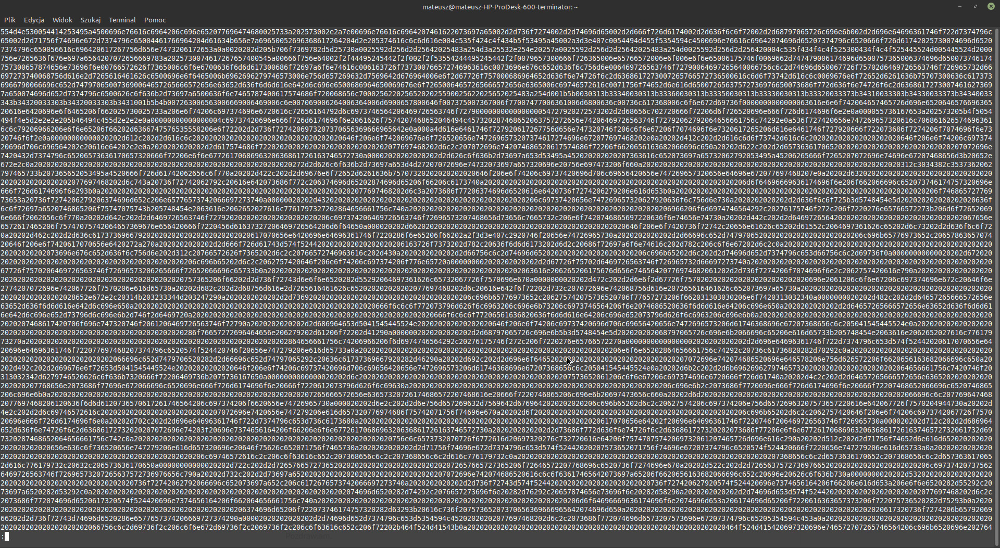

Użycie zdarzenia onMouseOver i onMouseOut.
Gdy wymagane jest jedynie wykrycie, gdzie względem konkretnego elementu strony na ekranie znajduje się wskaźnik myszy, pomocne w tym mogą okazać się procedury obsługi zdarzeń
onMouseOver
i
onMouseOut
.
> 